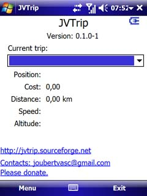

| Home | News | Documentation | Support | Downloads | License | Code | Change log | TODO | Donations |
|
The idea is let you track yourself while you are in a trip, walking, cycling, driving or just watching your childs moves
And then export the path to Google Earth. You can add notes, costs or pictures to your path. These informations will be stored with the GPS location where you added them. When you export your track to Google Earth, all information will be there as markers. Also the application will tell you the total cost of your trip, the distance you traveled, the current speed, altitude and position. There is an internal compass to help you to know where the true north is (not magnetic north). Because WM6 bases software can't take pictures I just let you to select pictures you have in your device. Of course you can take pictures with the application started. Another use of this project is for professional purpose. People who work with geo referenced material would use this application to register their works and discovers. Thinking on that professional use I added to the project the feature to show the traveled distance, the current speed, altitude, position and a compass for people knows where the true north is. Choosing between Imperial or Metric measurement systems the user will be able to convert meters in feets, km in miles and more. The project works with Windows Managed GPS or with External GPS devices. With WM GPS, the user will be able to use more than one GPS based software at the same time. |
 |
How it works:
First of all you must create a new trip typing the name of the trip, the start and end points. After that you just need to click in Start Trip.
There is an integration with Google Maps! When your GPS is fixed just click Where Am I and the application will show you an image from Google Maps with your current position. The same feature works to see where you added notes, costs or pictures.
Download JVTrip installer for free here and start your trip album in Google Earth.

|
Mail: joubertvasc@gmail.com |